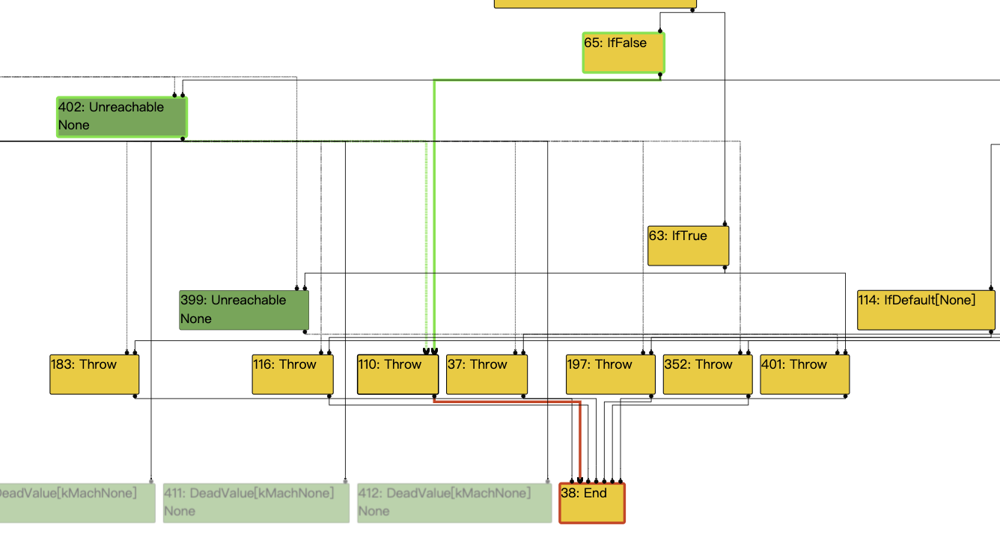

通过这个漏洞分析，对于
V8 JS的优化方面有更深的认识。感谢@xyzmshypnc和@P4nda的解答
漏洞简介
环境搭建
漏洞报告指出该漏洞影响的chrome范围是83.0.4103.61之前的版本，这里选择分析的V8版本就是3b627511511f00c552ced504c1f182bdcc3480af。
搭建之前仍然配置release版本的如下参数：
1 | gn gen out.gn/x64.release/ --args='is_debug = false v8_enable_backtrace = true v8_enable_disassembler = true v8_enable_object_print = true v8_enable_verify_heap = true symbol_level=2 target_cpu = "x64" v8_untrusted_code_mitigations = false' |
此外，由于这个漏洞涉及到Turbofan的相关知识，所以这里开启Turbofan的IR显示，配置如下：
1 | cd v8/tools/turbolizer |
基础知识
JIT优化
更多的基础知识可参考这两篇文章：
JS 异步函数
通常，我们常用的Javascript执行顺序是同步的，代码执行时是按照代码执行顺序依次执行的。当前一条带啊吗执行完毕后，才会执行后续代码。但是，在JS中也涉及到了一种异步执行逻辑。
在Javascript中在处理某些耗时较长的功能时也需要使用异步，比如获取某个网络资源等。可以将获取的函数写成异步函数，不阻塞主线程的运行。但是，在异步函数处理完成之后，又如何接着进行后续处理呢？这里不能直接将其合并到主线程中，因为会与主线程原本的逻辑冲突。所以这里就需要有相应的处理方法来完成异步函数的后续处理。
异步 CALLBACK
异步callback 其实就是函数，其是作为参数传递给那些在后台执行的其他函数. 当那些后台运行的代码结束，就调用callback 函数。以下面一个示例说明其使用方法：
1 | function f2(arg1){ |
在这个示例中，会先输出test3，等待两秒后再输出test2。
原因是在setTimeout函数中会异步等待两秒钟，我们设置其回调函数为f2，其会在等待两秒钟结束后执行输出test2。而f3是与setTimeout同步运行的，所以其不会等待2秒钟而是会直接输出test3。
Promise类
Promise 是一种全新的异步函数实现方式，其专为异步操作而设计，与callback相比其具有以下优点：
- 可以使用多个then()操作将多个异步操作链接在一起，并将其中一个操作的结果作为输入传递给下一个操作；
- Promise总是严格按照它们放置在事件队列中的顺序调用。
- 所有的错误都由块末尾的一个.catch()块处理
示例如下：
1 | fetch('products.json').then(function(response) { |
fetch函数用于获取数据，其会异步执行。在其执行完之后会执行第一个then中的代码返回json数据。该数据会用于第二个then的参数。每个then块都会返回一个promise类，如果其中任意一个then块执行失败都会进入catch块进行错误处理。
async 和 await关键字
async和await关键字是基于promise的语法糖，更易于异步代码。async关键字用于声明函数是一个异步函数，他会使函数返回一个promise对象。await关键字放在回调的Promise之前，将会暂停执行函数，直到Promise执行或拒绝。
示例如下：
1 | function resolveAfter2Seconds() { |
在这个示例中，会先输出calling，然后输出test，等待两秒后才会输出resolved。这里使用了async声明asyncCall是一个异步函数，而await则指出需要等resolveAfter2Seconds执行完才接着执行后续代码。
更详细的知识可以参考这两篇文章：
Faster async functions and promises
Turbofan
这里需要对Turbofan优化的总体流程有一个大概的了解。
Turbofan发生在什么阶段？
JS代码是解释执行代码，不需要进行预编译。总体流程为：
- 通过
Praser生成抽象语法树AST - 基于
AST使用Ignition生成未经优化的字节码 - 随后
Ignition负责记录未优化字节码的执行，主要是进行Inline Cache记录的操作，将一段时间内不变的属性获取操作内联为一个值，使得属性获取的操作更加快速和简洁 - 在执行一段时间后，将
Ignition生成的字节码构造为一个Graph，启动Turbofan机制，其基于预测优化原理，对Node sea进行优化，基于一段时间内某些对象类型不会改变的推测，将执行部分命令的代码中的部分检查等去掉，以此来优化字节码执行效率。
可见，整个Turbofan是发生于代码执行一段时间后，最终启用的优化机制。
Turbofan 基于何种原理？
最核心的原理就是 Speculative Optimize 推测优化。
解释型语言和编译型语言的一个很大的差别就是 解释型语言无法直接从源代码中确定一个数据的类型，如果无法预先确定一个数据的类型，那么解释器在执行时就需要耗费大量的时间来对这个数据进行安全检查，这是导致解释型语言比编译型语言效率更低的一个原因。
如果能够解决这个问题，那么就能够提升V8的执行效率。所以，V8提出了Speculative Optimize机制。
示例代码如下：
1 | x+y |
上述是一个简单的两个 数据相加的操作，在JS中加操作的对象可以是 数字、字符等。所以，最基础的JS字节码可能就会对x和y执行大量的检查。但是，如果在重复执行这条代码很多次，记录发现x和y的类型都是一个数值，那么V8就推测在后续执行这句代码时x和y的类型都是数值。然后在Node sea中去掉 这句代码中 关于字符等类型的检查，只保留了对 数值的检查。那么最终生成的优化后的JS字节码数量将会大大减少。
对于其他各种指令的操作也会有类似的效果，比如赋值操作、函数调用、数组访问等。
最终后续执行这段代码时，首先检查x和y的map是否发生改变，如果没有发生改变则说明当前数据的类型没有发生改变，则执行后续的优化汇编码。
如果发生了改变，则说明当前的优化汇编码已不适用，需要进入 解优化的过程，对这段代码重新进行优化。
Turbofan 包括哪几个阶段
为了对各种指令都进行完整有序的优化，Turbofan也包括多个阶段，每个阶段都有其特定的作用。
Graph building 图构建
该阶段的目的是根据 字节码 生成 一个完善的节点图，并在图中添加一些辅助 Turbofan优化的节点。
- 第一个阶段是图构建，基于
Ignition生成的字节码生成节点图，每个节点代表一个字节码的操作码或者一个分支，例如 JSCall、JSAdd、IFTrue等。 - 在生成的节点图中，还包括一些 栈帧环境的节点，这些节点是用于跟踪表示当前 字节码执行的栈帧环境，有助于解优化时使用；
- 然后会删除部分死的栈帧状态的节点，例如基线检查不会用的某些值会被替代为
optimized_out sentinel。 - 以及关于
OSR(of-stack-replacement)的解构，删除非OSR条目。
Native context specialize & inline
这个阶段的主要目的就是 用Ignition收集的关于 属性访问代码的 反馈信息feedback来优化节点图。
- 首先是关于全局属性的访问优化；
- 其次是关于
Load\Store\Call IC的优化，包括x.o这类的LoadIC，以及将已知函数名称的 函数调用 优化为 直接调用。 - 然后是将
JSCallFunction和JSCallConstruct内联，优化函数调用的过程，包括多态操作。 - 删掉死节点；
- 并对二进制和比较操作，不进行
type反馈。
在这块之前统称为 Fronted 阶段
Typer & Typed Optimize
这个阶段的主要目的就是 值的类型 来对图进行优化，包括对数据的范围、值进行合并预估，对一些函数优化为内置函数，将目标对象类型已知的分配节点优化为内联分配。
Typer根据JS类型规则将 类型分配给 产生值的节点，包括基于feedback反馈获得类型，同时将类型通过图节点进行传递，并且对值的范围和常数进行合并统一；- 然后基于类型 将 图 进行优化，这里会考虑静态变量，同时会将一些操作内联为
builtin内置函数（例如abs\ random\ array.prototype.push； - 随后 将
JS对象创建节点 优化为内联分配，例如JSCreate当目标对象类型是已知时即可优化为内联分配，以及SCreateArray, JSCreateLiteralObject等。并且使这些内敛分配 能够进行逃逸检查 和Load\store\check节点消除。
上面多次提到了Inline 内联的概念，这里可以将 Inline 理解为 一种优化方式。对于函数调用的内联，例如V8利用C++函数本身已经实现了random函数，那么当JS中调用random函数时即可直接去执行已实现的random代码，而无需经过中间的多重调用；对于属性访问的内联，例如 o.x 原本需要从 o 对象重重遍历 最终取到 x 的值，经过内联操作后 可以反悔 x 的值，而无需中间繁琐的查找过程；对于对象分配的内联，例如一个数组的分配，原本需要进行各种检查，当我们能够确定分配对象为 整数数组时，那么可以将其优化为 整数数组分配，减少中间检查的过程。
General Optimize
这个阶段是一些 通用的优化步骤，主要是对 control\effect 边的优化，冗余节点的消除、逃逸检查等。
- 解优化循环优化
loop peeling：这个是指在节点图中 没有多余的解优化的环回路径； - Load/Check 节点消除：消除冗余负载和检查 ；
- 逃逸检查：消除不能逃逸的分配，将能够用标量表示的变量全部用确定的标量表示
- 代表性选择 Representation selection ：截断分析，类型反馈传播；
在这个阶段之前统称为 Optimized 阶段
- Effect/Control 边 线性化 effect control Linearization：将潜在的解优化节点连接到 节点图，拓展宏操作，优化边。
- 消除冗余 存储节点；
- 控制流优化：
- 分配整合 和 写边界节点消除：没有碎片化的分配
- Late optimization pass：跳过全局变量编号，和死节点消除 和 冗余分支消除，Strength reduction 强度削弱用一些快的操作代替慢的操作
Scheduling & instruction selection
经过上面的优化步骤后，此时生成的节点图就是一个 优化度十分高的图，随后基于这个图生成优化后的字节码。
- 复杂的指令选择 instruction selection：最优的模式匹配，基于架构的匹配，死指令的消除
- 寄存器分配：
- Jump threads：删除块之间的跳转
- 生成code
这里之前的阶段统称为 Backend 阶段
关于Turbofan更多详细的内容，可以参考如下文章：
An overview of the TurboFan compiler
An Introduction to Speculative Optimization in V8
Turbofan 代码流程
接下来从V8代码中大概说明Turbofan的总体流程和对应的函数。
- 图构建，首先是根据生成的字节码构建初始节点图，调用栈如下，最终调用
PipelineImpl::CreateGraph函数
1 | Compiler::CompileOptimized |
这里可以看到PipelineImpl类如下，可以看到在这个类中包含了Turbofan的所有流程，是Turbofan的核心类。
1 | class PipelineImpl final { |
Native context specialize & inline阶段主要体现在CreateGraph函数中
在PipelineImpl::CreateGraph函数中，我们可以看到Fronted的所有阶段：
1 | bool PipelineImpl::CreateGraph() { |
- 随后进入
Optimized阶段，这里进入的函数调用链如下，可以看到最终进入了OptimizeGraph
1 | Compiler::CompileOptimized |
OptimizeGraph函数中，可以看到Typer & Typed Optimize和General Optimize过程：
1 | bool PipelineImpl::OptimizeGraph(Linkage* linkage) { |
Schedule
Shedule流程是在上述的EffectControlLinearization阶段，EffectControlLinearization阶段的主要目的是为了将 原本没有受到effect链约束的 节点图 优化为 含有effect约束的 控制流图。
在该阶段的主要流程为：
1、 执行schedule流程，根据节点图生成 控制流图 CFG
2、 在控制流图中 重建 effect和control链
3、 在重建时，优化操作指令 并重新构建 effect和control链
4、 结束 shecdule
Schedule的主要目的是根据前面优化后的节点图生成 控制流图CFG。原理就是根据节点图中的各种约束：value、effect、control的依赖关系，来将节点图中的节点重新排列。
其基本的流程为：
1、 构建基本块：遍历节点图中的控制流边；
2、 将固定的节点放入基本块中：固定基本块包括 phi，parameters 和 return state(返回状态) 三类
3、 将其他节点放入到基本块中：根据一个节点的使用位置放入对应的基本块中
构建完基本块后，接着需要来满足各种约束关系，这些约束关系是帮助Turbofan更加合理与准确。首先是effect边的关系，schedule必须保证如下两个条件：
- 保证
effect链的没有被分割：不同于普通的value，effect值是不能被拷贝传递的 - 保证
effect链没有被中断：如果一个node的output没有使用，那么它将不会被scheduled
具体如何实现满足effect约束，有以下几种情况：
1、 Store effect 排序约束：其必须与分支节点有一个约束关系，保证 其被放置在正确的分支之后
如下图所示，正常的流程应该是先判断 p是否存在，然后再去执行store操作，但是通过前面的分析，发现storeField节点和 ifTrue或IfFalse分支节点没有约束。那么这里会导致Store操作有可能在 判断之前就执行
所以，我们必须在Store节点和IfTrue分支节点间添加一个控制依赖，如下所示：
2、 Load effect 排序约束：其必须有一个完整的effect链做支撑，否则其可能会导致取得的结果不一致
如下图所示，代码流程是先执行Load取值操作，再执行store赋值操作，而如果Load操作没有一个完整的effect链约束则可能会导致 先执行了Store操作再执行Load操作。
3、 Memory region protection：分配操作和初始化操作必须被约束
如下图所示，Allocate操作必须在Store操作之前执行，所以使用BeginRegion和FinishRegion节点来约束。如果没有这样的约束，会存在先执行了Store操作而产生内存为分配或为初始化的错误。
想对schedule有更深入的了解，这里强烈推荐阅读这篇sildes：Turbofan IR
DeadCodeElimination
根据公开的issue说明，可以看到漏洞是在src/compiler/dead-code-elimination.cc 代码中的ReduceDeoptimizeOrReturnOrTerminateOrTailCall函数, 其会将 Terminal节点替换为Throw节点，然后在effect-control-linearization阶段会导致错误。
那么这里首先了解一下Terminal和Throw节点，其各自的作用以及创建的过程，对于节点图分析带来的影响。
死代码消除，主要是在优化节点图时会对死节点进行消除。首先，我们需要了解Throw和Terminate两个节点的意义。
这里关于V8 Turbofan节点图的一些概念，可以参考这篇文章V8 TurboFan 生成图简析。
总结：
节点图的节点数据类型表示如下：
1 | id: 结点ID，通常是一个数字 |
节点类型分为一下几种：
- Control 节点：颜色为黄色，表示控制流节点；
- Input 节点：浅蓝色，表示
Opcode为parameters或者Constant的节点 - JavaScript节点：那些 opcode 以 JS 开头的结点，通常用于调用任意
Javascript，其颜色为橙红色 - Simplified 节点：那些 opcode 包含 Phi、Boolean、Number、String、Change、Object、Reference、Any、ToNumber、AnyToBoolean、Load、Store，但不是 JavaScript类型的结点。其颜色为 蓝色
- Machine 节点：非常基础的语义，贴近硬件语言，颜色为绿色，例如Word32, Word64, Float64, Tagged，或者Int32Add, Float64Mul, TruncateFloat64ToUint32, Load
- live 和 Dead 属性：这两种并不是节点类型，而是一个节点的属性，表示当前节点的状态，live 节点的属性相比于 Dead 属性颜色更深
边的数据结构如下：
1 | {"source":18, //源节点 |
边的类型分为以下几种：
- Control：显示效果是一条实线，表示控制流的转移，可以理解为程序的执行流程；
- Value：显示效果也是一条实线，表示数据流的依赖传递
- Effect：显示为一条虚线，表示操作的顺序，例如读写状态。例如
obj[x] = obj[x] + 1，需要先load x的值，再执行add，最后再store，所以会产生effect影响：

- Context：显示也为一条实线，
- frame-state ：显示为一条梳虚线，只能由
frame-state状态的节点发出
Terminate节点
如果我们观察Trubofan生成的IR图可以发现在Inlining阶段其实就有Terminate和Throw节点的产生。其产生路径如下：
1 | PipelineImpl::CreateGraph |
在处理prepareForLoop字节码时，会产生Terminate节点用于循环的结尾节点：
1 | void BytecodeGraphBuilder::Environment::PrepareForLoop( |
在图中表现为，由一个Loop循环节点指向Terminate节点。这里Terminate的意义即表示一个循环退出时的节点。
这里可以编写如下的测试代码，编写一个循环来查看是否生成了一个Terminate节点：
1 | while(1){ |
可以看到生成的字节码中含有JmpLoop：
1 | 0 E> 0x11460820fff2 @ 0 : a7 StackCheck |
Throw节点
Throw节点的产生路径有很多，其可能是JSCallRuntime、Abort、Throw或者BuildSwitchOnGeneratorState时的默认退出节点IfDefault。
具体每个节点的产生代码，可以在如下路径compiler/bytecode-graph-builder.cc中查找Throw节点的产生。
其执行路径，和Terminate节点执行类似。这里Throw节点的意义是表示函数没有返回值时、或遇到Throw、Abort、Rethrow字节码时或switch-case的default路径。这里以VisitThrow为例说明：compiler/bytecode-graph-builder.cc
1 | //当遇到Throw字节码 |
可以直接使用Throw代码来查看是否会生成一个Throw节点：
1 | d8> throw 1 |
DeadCodeElimination分析
关于死节点的消除 在上述Turbofan流程讲解中，可以看到是在很多阶段都有发生的，原因就是因为每次进行一些优化时，都会产生相应的死节点。
死节点的消除会对如下几种节点操作码进行消除：
1 | Reduction DeadCodeElimination::Reduce(Node* node) { |
这里可以看到有kTerminate操作码的节点会执行ReduceDeoptimizeOrReturnOrTerminateOrTailCall函数进行死节点的消除。该函数如下
1 | Reduction DeadCodeElimination::ReduceDeoptimizeOrReturnOrTerminateOrTailCall( |
这个代码的总体功能就是将Terminate节点修改为Throw节点。如下图所示，在Typer阶段，Terminate节点的输入边和输出边如下所示，Terminate节点的输入边为由97 EffectPhi输入的effect边，由103 Loop节点输入的control边。输出边为指向38 End的Control节点。
当经过TypedLowering阶段优化后，110 Terminate节点变为了110 Throw节点，其两条输入边effect边的97 EffectPhi节点变为了402 Unreachable节点，control节点变为了IfFalse节点（这个节点的变化不是由于死节点导致）。

漏洞分析
POC 分析
漏洞触发POC如下：
1 | var obj = {}; |
1、 先创建了一个空字典obj，随后创建了函数f，在该函数中创建了一个Int8Array对象var13，然后为var13[0]赋值一个obj；
2、 使用async 关键字声明了一个异步函数var5，创建了一个字典var9，随后创建一个死循环；
3、 在循环中会先检查abc1和abc2是否存在，随后检测var9是否存在，若都存在则使用了await 1，执行完毕后会输出 abc3；
在debug模式下运行，会产生如下错误：
1 | # Fatal error in ../../src/compiler/schedule.cc, line 297 |
报错原因是在进行Schedule构建CFG时，构建每个基本块的边时，处理Throw节点的检查没通过，报错的函数如下：
1 | void ConnectThrow(Node* thr) { |
这里的思路很清晰，就是当遇到一个Throw节点时，将该节点的输入Control变定义为kThrow类型，再将其输入的Input节点加入到当前Throw节点的Control输入边的目标节点，最后将Throw节点的输出边指向end节点。也即优化Throw输出一定是end结束节点。
在上述代码说明中，我提到了前继和后继的概念这里是为了将 控制流图 与 节点图进行区分，我将控制流图中的 一个基本块的输入的控制流边命名为前继边，将其输出的控制流边命名为 后继边。 而且这里也要将控制流图中的边 与 节点图中的 Control类型边进行区分，这两条边分属于两个不同的图，含义也不相同。
在Debug时，首先会检查Throw节点的control输入边是否为kNone类型，如果是则进行后续。在这一步会报错。
漏洞触发分析
漏洞触发的关键就是 能够将Terminate节点优化为Throw节点，但是这个优化触发的具体流程是什么，也是我们需要重点关注的。
首先基于上面POC修改了一份能够触发优化的，最简POC如下：
1 |
OOB分析
这里，为了查看这个漏洞所能达到的效果，这里官方issue还提供了第二份poc，在这份POC中实现了OOB操作：
1 | class classA { |
1、 首先构建了两个类A和B，并有三个成员变量val、x、s
2、 然后创建了一个和POC1中类似的漏洞触发函数，区别在于加入了一段便于后续漏洞利用的代码
3、 最后创建一个大小为10的Array，并设置arr[0] = 1.1
4、 随后执行两个循环进行优化
5、 最后是触发OOB的代码，传入arr数组，修改arr.val = -1，这句代码就是真正能导致OOB的原因，如果程序没有对arr的map进行检查而是直接将其当作Class A 或 B处理，那么也会根据偏移去寻找arr的val变量的位置，而该位置刚好是arr数组的length的位置，也就是会将arr数组的 length修改为一个 极大值，使得arr数组能够越界。
而要造成上面的效果，一个很重要的前提条件就是要消除执行args.val = -1这句代码前的 CheckMaps检查。
OOB 原理
首先，编写如下的测试代码，测试当执行Store指令时的Turbofan优化图：
1 | class classA { |
可以看到，一个主要的Store操作是arg1.val = -1。经过优化后图在EffectLinearization阶段的StoreField操作前的58 DeoptimizeUnless节点会判断当前Map是否相同，如果不相同则会进入解优化的过程，所以这里会有CheckMaps检查。
最终生成的优化后的字节码如下，可以看到
1 | 41 movl rdi,0x8244f91 ;; (compressed) object: 0x36ac08244f91 <Map(HOLEY_ELEMENTS)> |
而在我们的POC生成的优化图EffectLinearization阶段，其79 StoreFiled节点表示关键代码arg1.val = -1，而这里可以看到此时在79 StoreField节点之前仍然有465 DeoptimizeUnless节点且会进行WrongMap的检查。
但是，如果我们查看最终生成的 优化代码中也可以看到区别，在执行StoreField赋值操作之前并没有CheckMap检查。
1 | 92 movl r9,[r8-0x1] |
我们可以在将有漏洞的版本和修复后的版本在EffectLinearizition阶段生成的CFG进行对比，就可以发现问题是出现在该阶段根据节点图生成控制流图时，将StoreField基本块和DeoptimizeUnless基本块进行排序时，漏洞版本会将StoreField基本块排在DeoptimizeUnless基本块之前，最终生成优化后的字节码时就会使得赋值操作在CheckMaps检查之前。
如下图是，修复后版本对POC在EffectLinearizition阶段生成的CFG：
下图是，漏洞版本生成的CFG。可以观察控制流执行顺序，此时有一条是B3 -> B4 ->B5，在B4基本块中有漏洞利用的关键赋值操作79 StoreField，在B5基本块中有CheckMap所在的465 DeoptimizeUnless。此时，可以明确看到类型检查的节点被放到了赋值操作之后。这与我们在基础知识中讲解的Schedule阶段会依据effect和control变约束基本块之间的执行顺序有关。
1 | -- Graph after V8.TFEffectLinearization -- |
总结：由于POC在Turbofan的EffectLinearizition阶段，根据节点的effect和control边来约束生成基本块的执行顺序时，将CheckMap检查的节点放到了StoreField操作节点之后，导致在执行赋值操作之前没有进行Map检查，最终能够成功修改array数组类型的length属性为-1，实现OOB攻击。
CheckMap 如何被绕过
前面已经说明，OOB是如何产生的。那么，现在的问题是如何实现将DeoptimizeUnless节点放到StoreField节点之后的基本块中，也即如何实现了绕过CheckMap。
那么首先需要明白，在CFG构建过程，每个节点是如何被放入基本块中的。
CFG 构建
Schedule阶段一个重要的任务就是切割基本块，然后构建CFG图。在EffectControlLinearizationPhase中，首先是执行GraphTrimmer，去除目前节点图中不能到达的节点；然后执行ComputeSchedule去计算构建CFG；然后执行LinearizeEffectControl其会重新连接allocate分配节点的control和effect边，消除region节点，引入EffectPhi节点来实现控制流图的SSA（static single assignment form，每个变量仅被赋值一次）；最后执行dead_code_elimination和common_reducer进行节点删减。
1 | struct EffectControlLinearizationPhase { |
computeSchedule
ComputeSchedule函数的主要流程为：
- 基于节点图构建基本的
CFG - 计算基本块的
PRO(reverse-post-ordering 逆后序)（编译原理的逆后序可参考迭代数据流分析中的逆后序)，这里计算逆后序是为了给后续构建支配节点树提供每个节点的Dom值 - 随后为CFG构建支配节点树
Dominator Tree，关于支配节点树的作用可以参考编译原理代码优化相关章节，这里可以理解为由于后续的各种优化需要基于Dom Tree，所以这里需要提前构建 - 然后按照逆后序计算每个节点的
Use情况（即记录指向该节点的边id、以及前驱节点id和本节点id） - 随后计算出节点的最小包含基本块以及对应的
dominator所属层次等信息，同时根据依赖关系将该信息传播给该节点所支配的结点更新他们的支配信息。这里计算的节点所属位置仍是不确定的，因为只有在综合所有的支配信息之后才能得到节点真正应属的位置 - 通过前面的支配信息的传播，随后对所有的节点的基本块所属位置做最后的构建
- 最后将节点放入到对应的基本块中
1 | Schedule* Scheduler::ComputeSchedule(Zone* zone, Graph* graph, Flags flags, |
BuildCFG
基本块构建主要包含三部分：
- 随后使用反向广度优先算法遍历节点图
- 使用
Queue函数依据节点的类型将节点划分到每个基本块中，或创建新的基本块 - 最后调用
ConnectBlocks来为划分的基本块创建连接边
1 | void Run() { |
ConnectBlocks
该函数用于建立切割好的基本块之间的连接边。其会根据基本块的control节点的类型，创建对应的连接。这里主要关注kThrow类型。
- 首先调用
UpdatePlacement函数，根据当前节点的指令类型来修改节点的处理信息，并减少该节点输入边的Use数量 - 随后使用
ConnectThrow函数为Throw所在基本块与结束基本块添加边信息
1 | void ConnectBlocks(Node* node) { |
总结：当遇到一个Throw节点时，在debug版本会检查Throw节点所在基本块的最后一个控制节点是否为kNone属性，如果是则将其修改为kThrow属性，然后为该基本块和结束基本块构建一个双向边。
1 | In file: /home/alex/v8/v8/src/compiler/scheduler.cc |
从上面看到在处理110 Throw节点时，会先获取其control输入节点throw_control为65 IfFalse节点；然后从65 IfFalse节点开始遍历ControlInput链寻找已经被分配基本块的节点，并得到基本块编号，这里刚好64 IfFalse已经被分配了基本块编号3，则throw_block = 3，如下所示：
1 | In file: /home/alex/v8/v8/src/compiler/scheduler.cc |
随后进入AddThrow函数，由于此时的block 3的control_=kNone，所以能通过检查。然后将block的control_设置为kThrow，将control_input_设置为Throw 110节点，并将基本块3 与 end块双向连接。
1 | In file: /home/alex/v8/v8/src/compiler/schedule.cc |
自此，完成了对Throw 110节点的处理，还没有引发崩溃。但是，接着调试会发现还会处理另一个Throw 159节点，且该节点获取的throw_control节点和throw_block块和Throw 110节点相同。这里还可以发现此时throw_block的control_和control_input_属性在处理Throw 110节点时就已经被设置。
1 | In file: /home/alex/v8/v8/src/compiler/scheduler.cc |
进入AddThrow函数，如果是Debug版本这里由于block 3的control_已经被设置为kThrow，不等于kNone，那么就会报错。如果是release版本就不会有问题，就会再次设置block 3的control_ = kThrow，设置control_input_ = Throw 159。并且会设置Throw 159节点到block 3的映射，再次设置block 3和end基本块的双向边。
1 | In file: /home/alex/v8/v8/src/compiler/schedule.cc |
总结：由于Terminate 110节点被在前面Inlining Phase阶段被替换为了110 Throw节点，导致其在BuildCFG与159 Throw节点拥有相同的前驱节点65 IfFalse，则使得这两个节点都被分配到了block 3，并且对block 3进行了两次control_和control_input_赋值，构建了两次block 3和end节点的双向边，也使得110 Throw和159 Throw节点都可以索引得到Block 3。
这里，可以看到最终生成的节点图如下所示：
现在，我们分析清楚了POC1为什么会在DCHECK处报错。那么接着对POC2是如何实现OOB进行分析。
ComputeSpecialRPONumbering
根据BuildCFG创建的CFG，计算每个节点的逆后序，最终返回一个逆后序排列的BlockVector。
1 | void Scheduler::ComputeSpecialRPONumbering() { |
GenerateDominatorTree
如果从流图的入口节点到节节点n的每条路径都经过节点 d，则称节点 d 支配(dominator) n，记为 d dom n。而 Immediate Block Dominators 是指 n 的支配节点中离 n 最近的节点。
生成直接支配节点树，方法就是按照逆后序遍历基本块，对没一个基本块的前驱节点进行遍历，比较每个前驱节点的深度，最终得到深度最小的前驱节点作为直接支配节点
1 | void Scheduler::GenerateDominatorTree() { |
PrepareUses
计算每个节点的使用次数Uses，保证每个节点的使用都被放在节点之前。这里计算的节点使用次数，将会在SchduleLate中被依次抵消。
从end节点开始遍历节点图，对于状态为kFixed节点标记为root节点，对于其中尚未分配基本块的节点将其添加到control_input对应的基本块中。
1 | void Scheduler::PrepareUses() { |
ScheduleEarly
将每个节点放置在最小基本块内，保证每个节点都会被放在最早可以出现的位置。首先遍历根节点，将根节点放入queue_中，然后调用VisitNode访问根节点，并将其当前的schedule位置传播给其所有的uses。而在传播时，又会判断use节点的深度是否比当前最小基本块深度更深，若更深则继续向后遍历传播位置。
1 | void Scheduler::ScheduleEarly() { |
ScheduleLate
将节点放入所有use节点的支配树中，遍历根节点的input节点检查其是否能从循环结构中提前，并且最终完成节点与block的映射
1 | void Scheduler::ScheduleLate() { |
SealFinalSchedule
根据节点和基本块的映射，逆后序访问节点将其依次加到最终的基本块中
1 | void Scheduler::SealFinalSchedule() { |
日志输出：
这里，可以使用--trace-turbo-schedule来对ComputeSchedule阶段进行日志输出。但是这里可以看到还没有对基本块的执行顺序做最终的确定，而是要到EffectLineariziton阶段。
EffectLinearizition
该阶段主要是将分配表示形式的变化链入control/effect chain中并lower节点，引入effect phis重新连接effect得到SSA等。
1 | void EffectControlLinearizer::Run() { |
ProcessNode
在ProcessNode中会处理除EffectPhi\ Effect\ Terminate节点之外的其他节点。首先调用TryWireInStateEffect函数，将节点与effect\control链连接，随后根据节点的类型，设置对应的属性和修改effect\control链。
1 | void EffectControlLinearizer::ProcessNode(Node* node, Node** frame_state) { |
TryWireInStateEffect
这里会根据节点的类型，对节点进行优化，并且调用ReplaceUses函数修改节点的use_edge。
1 | bool EffectControlLinearizer::TryWireInStateEffect(Node* node, |
ConnectUnreachableToEnd
该函数是ProcessNode遇到kUnreachable节点时的处理流程，会新建一个Throw节点，并将其连接到end节点，而且会修改effect_和control_属性为dead。
1 | void GraphAssembler::ConnectUnreachableToEnd() { |
FinalizeCurrentBlock
主要是判断当前基本块是否可达，如果不可达，则会修改control_和effect_属性为当前基本块的throw_node节点属性。
1 | BasicBlock* GraphAssembler::FinalizeCurrentBlock(BasicBlock* block) { |
UpdateEffectControlForNode
对于特定类型的节点，会更新节点的effect和control信息为gasm()->control()。
1 | void EffectControlLinearizer::UpdateEffectControlForNode(Node* node) { |
ReduceGraph
完成了ComputeSchedule、EffectLineariziion之后，就是进行ReduceGraph。这里主要关注DeadCodeEimination中的Throw节点，这里可以看到在PropagateDeadControl函数中，会判断throw节点的control_input输入节点是否为Dead，如果是则调用Replace
函数，不是则不做更改。
1 | Reduction DeadCodeElimination::Reduce(Node* node) { |
这里可以看到对于
调试分析
支配树分析
CFG构建的过程中，一个很重要的阶段就是构建每个节点的直接支配节点，因为直接支配节点表示了节点之间的必须的执行路径。然后再由根节点开始，遍历输入节点，构建最小的基本块。那么根据遍历直接支配节点，我们能够确定节点之间的执行顺序。这里，我们比较漏洞版本和修复版本关于漏洞触发关键的79 StoreField节点的直接支配树的差异。
这里漏洞版本的直接支配树是：422 unreachable-> 475 DeoptimizeUnless -> 471 DeoptimizeUnless ->468 LoadField -> 79 StoreField，当有两个支配节点时会选择深度更小的节点作为直接支配节点，所以这里由于422 Unreachable的两个支配节点476 Throw block 4和137 Throw block 3，最终会选择block 3传递给79 StoreField。
而在修复后的版本中，由于137 Throw这个由Terminate节点转变而来的节点的消失。使得得到的支配树为：422 Unreachable -> 475 DeoptimizeUnless -> 471 DeoptimizeUnless -> 468 LoadField -> 79 StoreField，这里422 Unreachable节点的基本块为block 4，所以最终使得StoreField节点的基本块也变为 4。
1 | //漏洞版本 |
而我们看一下原本在79 StoreField节点前执行的检查节点465 DeoptimizeUnless节点的支配节点树，发现其支配节点是两个根节点，而这两个根节点一开始就被分配给了Block 4。
1 | //漏洞版本 |
检查绕过总结：在BuildCFG的ScheduleLate阶段，在根据支配树来为每个节点分配基本块时，在漏洞版本中由于多了一个由Terminate节点转变而来的137 Throw节点，使得在计算422 Unreachable节点的基本块时选择137 Throw作为直接支配节点，最终传递基本块时导致79 StoreField节点的基本块由正常的基本块4变为了基本块3。而原本应该在79 StoreField节点之前的检查465 DeoptimizeUnless节点却被放在了Block 4。所以，漏洞版本中StoreField赋值的执行 并没有进行CheckMap检查。
这里还有一个关键的问题即137 Throw节点和476 Throw节点所属基本块不相同？137 Throw节点是在什么时候被分配了基本块3？
为什么137Throw 节点会被分配基本块3？在前面CFG构建时已经解释了，这里如果继续查看TFEffectLinearization的SCHEDULE EARLY阶段，也可以发现137 Throw节点在此时被识别为根节点被分配了block 3。再继续向上回溯，可以看到在Create CFG阶段时，137 Throw节点就已经被连接到了end节点。
1 | Fixing #137:Throw minimum_block = id:3, dominator_depth = 2 |
这里首先要解释一个参数--trace-turbo-scheduled，当我们启动v8时加上这个参数可以看到其会在Turbofan的每一个优化阶段都输出ComputeSchedule阶段的构建信息。原因是在OptimizeGraph函数中，可以看到在执行完一个优化阶段后，都会紧跟着执行RunPrintAndVerify函数，而在该函数中会判断是否开启了--trace-turbo-scheduled参数，如果开启了则会执行一次ComputeSchedule函数。
最终导致，我们输出的结果里每一个优化阶段都会输出schedule信息。
1 | bool PipelineImpl::OptimizeGraph(Linkage* linkage) { |
为什么137和476不同
这里，如果对比一下EarlyOptimize和EffectLinearizition两个阶段的IR图，可以发现476节点是在EffectLinearizition中构建的。所以，我们重点关注ProcessNode阶段的ConnectUnreachable函数：
可以看到在处理422 Unreachable节点时，会创建一个476 Throw节点，并且将该节点与end节点相连接。
1 | In file: /home/alex/v8/v8/src/compiler/graph-assembler.cc |
接着我们查看日志，发现476 Throw节点竟然是在Create CFG时就已经被当作一个Fixed节点，而上面的分析说明476 Throw节点是在EffectLinearizition阶段被创建的，是在Create CFG之后。
这里经过调试发现是在执行完EffectLinearizition之后，又执行了一个ComputeSchedulePhase函数，最终进入了ConnectThrow函数，调用链如下：
1 | PipelineImpl::OptimizeGraph |
在ConnectThrow函数中，对于476 Throw节点计算得到的throw_control节点为475 DeoptimizeUnless节点，最终得到的基本块为block 4。所以这里最终也将476 Throw节点放入block 4。
1 | 566 void ConnectThrow(Node* thr) { |
OOB实现总结
这里对整个漏洞的触发和利用再做一个总结。
漏洞触发的原因是由于在TyperLowering阶段会执行一次DeadCodeElimination死代码消除，对于137 Terminate节点由于只判断了该节点的input输入节点的类型是否为kDead、kUnreachable、kDeadValue，如果是则将Terminate节点转变为137 Throw节点。由于Terminate节点是不应该参与程序后序的优化流程的，但是这里却被转变为Throw节点并被保留下来，最终使得程序的执行流程被这个节点所影响。
具体的影响是，在EffectControlLinearizition阶段开始的Create CFG时，由于137 Throw节点会被当作Fixed根节点，所以在此时就会为其分配基本块，而由于其control input输入节点是74 call节点，使得其最终被分配block 3。
而在EffectControlLinerizition的EffectLinearizition阶段时，对于422 Unreachable节点会进行ConnectUnreachable处理，会建立一个新的476 Throw节点，并将该节点连接到end节点处。随后在EffectControlLinearizition中的ReduceGraph阶段将原本的另一个186 Throw节点消除。
然后在执行完最终的EffectControlLinerizition阶段后，还会执行一次ComputeSchedule，在又一次Create CFG时会对新生成的476 Throw节点会在ConnectBlock中计算基本块，这里由于其连接的是475 DeoptimizeUnless所以被分配了Block 4。
在又一次的ScheduleEarly阶段将节点放入基本块，并计算基本块之间的执行顺序时，会通过直接支配节点来计算。虽然137 Throw block 3和476 Throw block 4都是422 Unreachable的支配节点，但是137 Throw节点的基本块深度更小，所以会选择Block 3作为422 Unreachable节点的基本块编号。此时，137 Throw 节点就已经对基本块构建产生了影响，使得422 unreachable 节点由block 4被放入了block 3。然后，按照支配节点树的传播，导致将79 Store赋值节点放入了block 3，而对其进行类型检查的节点465 DeoptimizeUnless被正常放到了block 4。
最终，使得79 Store节点在 465 DeoptimizeUnless节点 之前被执行，我们可以对对象按照原有的Map结构进行赋值，最终修改数组对象的length=-1，实现OOB
漏洞利用
前面的POC2已经实现了一个数组的OOB，后面的利用就基本是常规思路。
1 | function gc() |
漏洞修复
1 | node->opcode() == IrOpcode::kTailCall); |
漏洞修复第一处是在DeadCodeElimination阶段将ReduceDeoptimizeOrReturnOrTerminateOrTailCall函数中判断当前处理节点类型中单独增加一个Terminate类型的判断，如果是Terminate节点则不再将其替换为Throw节点。一旦Terminate节点在这里不再变为Throw节点，那么其在后续的ReduceLoopOrMerge会被替换为Dead，然后被消除，不再参与代码后续的优化流程。
1 | //src/compiler/dead-code-elimination.cc:114 |
漏洞修复的第二处是在Schedule阶段的ConnectBlocks，对``Goto\ Call\ Branch\ Switch\ TailCall\ Return\ Deoptimize\ Throw\ InsertBranch\ InsertSwicth类型都加了一个CHECK检查判断基本块的control_属性是否为kNone。这里的防范可以看到是为了防止其他类型也发生本漏洞一样的漏洞模式利用，所以这里会对Block做一个强制类型检查，确保每一个基本块都只能对control_赋值一次。从代码思路上来说，每一个基本块只能有一个输入节点和一个输出节点，如果对一个基本块进行多次control_`赋值那么就相当于为基本块引入两个输出节点，那么就会影响后续的节点加入基本块的计算。
所以，这里将这一类漏洞全部都进行了修复。
1 | @@ -218,7 +218,7 @@ |
总结与思考
这个漏洞是一个十分有难度的漏洞，主要是其漏洞触发点并不会直接对V8造成影响，而是在后续的EffectControlLineariziton阶段将节点放入基本块时造成了影响。从漏洞产生到真正触发可利用的OOB，需要经过多重优化，需要对Turbofan的各种优化机制都有十分深入的了解才能够构造出一份可利用的代码。
漏洞成因本质上是对于一个Terminate节点在TypedLowering阶段的DeadCodeElimination消除时，开发者原本认为Terminate、Return、TailCall、kDeoptimize是具有相同含义的节点，只判断了这些节点的input输入节点的类型是否为空，如果不为空则将其替换为Throw节点。该节点被替换后，避免了后续对该节点的消除，使其能够参与后续的代码优化，最终导致后续基本块计算时影响了节点支配树的，最终导致节点的执行顺序发生了变化。
漏洞利用的本质方法是利用这个Throw节点在后续EffectControlLinearizition阶段，构建基本块时会被分配Block 3，与另一个Throw节点（分配到Block 4)同时与unreachable节点连接，最后使得计算出来的Unreachable节点的基本块为Block 3。对于后续将节点加入基本块时，根据支配树的关系，会使得一个赋值节点StoreField由原本的Block 4被错误分配到了Block 3，使其在检查节点DeoptimizeUnless之前。最终，我们就能够通过这个赋值操作修改对象的数据而不对该对象进行类型检查。
漏洞模式上来看是Terminate节点和Return、TailCall、kDeoptimize节点是不具有相同含义的，其不是原本控制流的一部分，而在处理它时却统一将转换为了Throw节点，使得该节点能够参与后续的代码优化流程，最终对代码优化结果产生了影响。也就是由于漏洞，在优化过程中原本正常的节点图中多了一个能够参与控制流的节点，这是本质上的问题。
这种模式也可能发生在其他被含义混淆的类型，但是漏洞修复的第二个patch在对基本块进行边连接时，会对基本块的control_进行检查，从根本上避免了一个基本块有多个输出节点，也就避免了在根据输出节点的支配树来将其他节点加入基本块时将节点的所属基本块计算错误。
参考文献
An overview of the TurboFan compiler
chrome V8 issue-1076708 暨 CVE-2020-6468 漏洞分析


- 本文作者： A1ex
- 本文链接： http://yoursite.com/2022/01/11/CVE-2020-6468-漏洞分析/
- 版权声明： 本博客所有文章除特别声明外，均采用 MIT 许可协议。转载请注明出处！